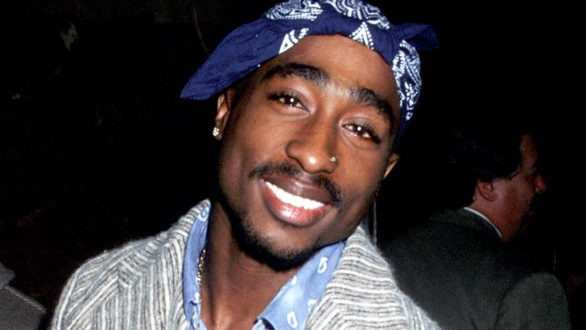

Tupack Shakurs's origin
Shakur was born in New York City to parents who were both political activists and Black Panther Party members. Raised by his mother, Afeni Shakur, he relocated to Baltimore in 1984 and to the San Francisco Bay Area in 1988. With the release of his debut album 2Pacalypse Now in 1991, he became a central figure in West Coast hip hop for his conscious rap lyrics. Shakur achieved further critical and commercial success with his follow-up albums Strictly 4 My N.I.G.G.A.Z... (1993) and Me Against the World (1995). His Diamond certified album All Eyez on Me (1996), the first double-length album in hip-hop history, abandoned his introspective lyrics for volatile gangsta rap. In addition to his music career, Shakur also found considerable success as an actor, with his starring roles in Juice (1992), Poetic Justice (1993), Above the Rim (1994), Bullet (1996), Gridlock'd (1997), and Gang Related (1997).
Tupac's career
During the later part of his career, Shakur was shot five times in the lobby of a New York recording studio and experienced legal troubles, including incarceration. In 1995, Shakur served eight months in prison on sexual abuse charges, but was released pending an appeal of his conviction. Following his release, he signed to Marion "Suge" Knight's label Death Row Records and became heavily involved in the growing East Coast West Coast hip hop rivalry. On September 7, 1996, Shakur was shot four times by an unidentified assailant in a drive-by shooting in Las Vegas; he died six days later. Following his murder, Shakur's friend-turned-rival, the Notorious B.I.G., was at first considered a suspect due to their public feud; he was also murdered in another drive-by shooting six months later in March 1997, while visiting Los Angeles.
Tupac Shakur
All eyes one me
Tupac's most popular song is "All eyes on me"